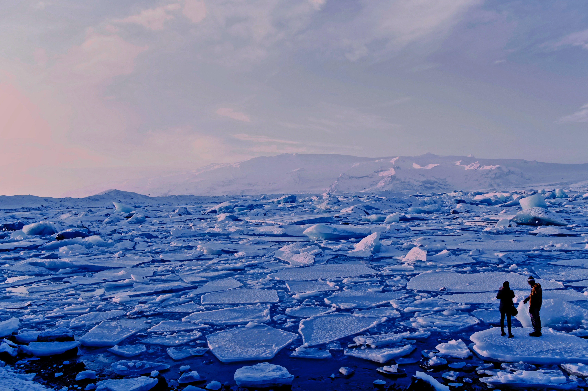

Global Warming
[- Remove subject]

Global warming is the ongoing rise of the average temperature of the Earth's climate system and has been demonstrated by direct temperature measurements and by measurements of various effects of the warming. It is a major aspect of climate change which, in addition to rising global surface temperatures,also includes its effects, such as changes in precipitation.While there have been prehistoric periods of global warming, observed changes since the mid-20th century have been unprecedented in rate and scale.
Land surfaces are heating faster than the ocean surface, leading to heat waves, wildfires, and the expansion of deserts.Increasing atmospheric energy and rates of evaporation are causing more intense storms and weather extremes, damaging infrastructure and agriculture. Surface temperature increases are greatest in the Arctic, which have contributed to the retreat of glaciers, permafrost, and sea ice.
Environmental impacts include the extinction or relocation of many species as their ecosystems change, most immediately in coral reefs, mountains, and the Arctic. Surface temperatures would stabilize and decline a little if emissions were cut off, but other impacts will continue for centuries, including rising sea levels from melting ice sheets, rising ocean temperatures, and ocean acidification from elevated levels of carbon dioxide.
[Edit Text]CO2 Emissions
[- Remove subject]

Carbon dioxide (CO2) is a colourless, odourless and non-poisonous gas formed by combustion of carbon and in the respiration of living organisms and is considered a greenhouse gas. Emissions means the release of greenhouse gases and/or their precursors into the atmosphere over a specified area and period of time. Carbon dioxide emissions or CO2 emissions are emissions stemming from the burning of fossil fuels and the manufacture of cement; they include carbon dioxide produced during consumption of solid, liquid, and gas fuels as well as gas flaring.
The visualisation presents the long-run perspective on global CO2 emissions. Global emissions increased from 2 billion tonnes of carbon dioxide in 1900 to over 36 billion tonnes 115 years later.
What do our most recent trends in emissions and concentrations look like? Are we making any progress in reduction?
Whilst data from 2014 to 2017 suggested global annual emissions of CO2 had approximately stabilized, data have reported a further annual increase of 2.7%, and 0.6% in 2018 and 2019, respectively.
Ice Melting
[- Remove subject]
Melting Ice Causes More Warming
When solar radiation hits snow and ice approximately 90% of it is reflected back out to space. As global warming causes more snow and ice to melt each summer, the ocean and land that were underneath the ice are exposed at the Earth’s surface. Because they are darker in color, the ocean and land absorb more incoming solar radiation, and then release the heat to the atmosphere. This causes more global warming. In this way, melting ice causes more warming and so more ice melts. This is known as a feedback. According to a recent scientific study that used computer models to predict the future of Arctic sea ice, there may be no more sea ice left in the Arctic Ocean during summer within the next few decades.
Melting Permafrost Releases Greenhouse Gas
Global warming is causing soils in the polar regions that have been frozen for as much as 40,000 years to thaw. As they thaw, carbon trapped within the soils is released into the atmosphere as methane, a powerful greenhouse gas. The methane released to the atmosphere causes more global warming, which then melts more of the frozen soils.
Less Ice on Land Means Sea Level Rises
Sea level has been rising about 1-2 millimeters each year as the Earth has become warmer. Some of the sea level rise due to melting glaciers and ice sheets which add water to the oceans that was once trapped on land. Certain glaciers and ice sheets are particularly vulnerable. Global warming has caused them to be less stable, to move faster towards the ocean, and add more ice into the water.
Effects on Humans
[- Remove subject]

The vulnerability and exposure of humans to climate change varies from one economic sector to another and will have different impacts in different countries. Wealthy industrialised countries, which have emitted the most CO2, have more resources and so are the least vulnerable to global warming. Economic sectors that are likely to be affected include agriculture, human health, fisheries, forestry, energy, insurance, financial services, tourism, and recreation. The quality and quantity of freshwater will likely be affected almost everywhere. Some people may be particularly at risk from climate change, such as the poor, young children and the elderly.
Food Security
Climate change will impact agriculture and food production around the world due to the effects of elevated CO2 in the atmosphere; higher temperatures; altered precipitation and transpiration regimes; increased frequency of extreme events; and modified weed, pest, and pathogen pressure. Climate change is projected to negatively affect all four pillars of food security: not only how much food is available, but also how easy food is to access (prices), food quality and how stable the food system is. Climate change impacts depend strongly on projected future social and economic development. As of 2019, an estimated 831 million people are undernourished. Under a high emission scenario, cereals are projected to become 1-29% more expensive in 2050 depending on the socioeconomic pathway, particularly affecting low-income consumers. Compared to a no climate change scenario, this would put between 1-181 million extra people at risk of hunger.
Water security
A number of climate-related trends have been observed that affect water resources. These include changes in precipitation, the cryosphere and surface waters. Changes in temperature are correlated with variability in precipitation because the water cycle is reactive to temperature. Temperature increases change precipitation patterns. Excessive precipitation leads to excessive sediment deposition, nutrient pollution, and concentration of minerals in aquifers. The rising global temperature will cause sea level rise and will extend areas of salinization of groundwater and estuaries, resulting in a decrease in freshwater availability for humans and ecosystems in coastal areas. The rising sea level will push the salt gradient into freshwater deposits and will eventually pollute freshwater sources.
Health
Humans are exposed to climate change through changing weather patterns and indirectly through changes in water, air and food quality and changes in ecosystems, agriculture, industry and settlements and the economy. Air pollution, wildfires, and heat waves caused by global warming have significantly affected human health, and in 2007, the World Health Organization estimated 150,000 people were being killed by climate-change-related issues every year. A study by the World Health Organization concluded that climate change was responsible for 3% of diarrhoea, 3% of malaria, and 3.8% of dengue fever deaths worldwide in 2004. Total attributable mortality was about 0.2% of deaths in 2004; of these, 85% were child deaths. The effects of more frequent and extreme storms were excluded from this study.